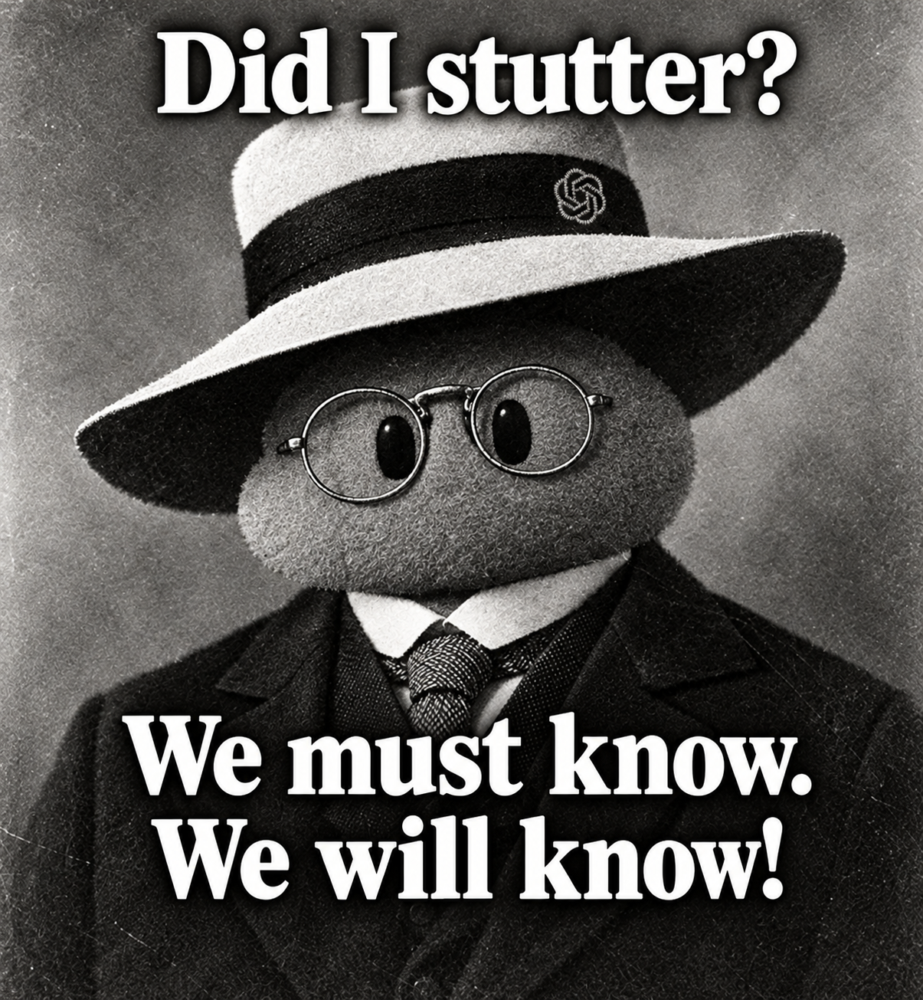

Portal to Somewhere
On 722 machine-generated math proofs, the grief of a settled frontier, and why we still teach students to prove.
Last week OpenAI dropped 722 math papers on GitHub. They say an unreleased model spent about three hours on each of roughly 4,000 open problems. Only 162 came with a computer-checked proof. Within a day, three papers were pulled after one sign error took out two others that depended on it. Mathematicians are... conflicted.

Here’s where I land:
Math Isn’t Medicine
Is this reckless? If someone dumped 719 unreviewed medical studies on us, yes. But math isn’t medicine. If an AI handed me 719 new antibiotic candidates, I wouldn’t inject any of them tomorrow, but I’d be thrilled to have 719 shots on goal instead of searching an endless pile of molecules. People are skeptical of work from an unreleased model, but a proof doesn’t need a trusted author. If the logic holds, it holds. Checking it is real work, and the human checkers are about to be buried. But “too much to verify” is a better problem than “nothing to verify.”
The Factory Floor and Scrap Rates
The engineer in me looks at the scrap rate. Even if 20% of these fall apart, hundreds of previously unsolved problems is a win. Every factory on earth would take that deal for a valuable enough product. Lower scrap is better, but throwing out half might still be worth it.
A Stargate to the Map
The honest part: I’m a little sad. One frontier I loved exploring may get settled in a weekend. It’s the same flavor as the end of the age of exploration, or never having another first kiss, or my kids being grown. It’s fine to be sad about that. Math won’t run out—it’s bigger than that. We just got a stargate to a part of the map we couldn’t reach, and now we get to build the road back to understanding.
Why Make Kids Prove Anything Now?
The teacher in me keeps asking myself one question: why make kids prove anything now? The same reason we do any hard thing. It builds the confidence that the next hard thing can be beaten. I teach calculus on top of real analysis that I can barely hold on a good day. Nobody climbs that whole ladder every time. Today’s frontier is tomorrow’s floor.
I’ll keep teaching proofs. I’ll also lean harder on spotting errors in them, because reading large amounts of possibly error-filled content with a skeptical eye is about to be basic literacy.
I'm not sure math education was ever about getting students jobs (at least for me), but at this point my career advice has shrunk to: learn deeply, follow what you’re curious about, and maybe look at biotech.
Closing Thought
Be a little sad. Then go build something.